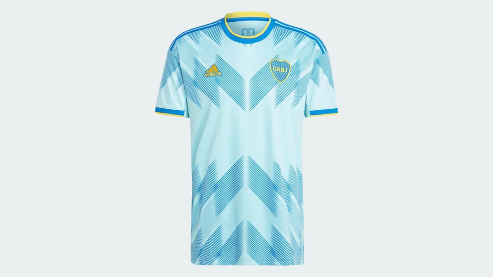
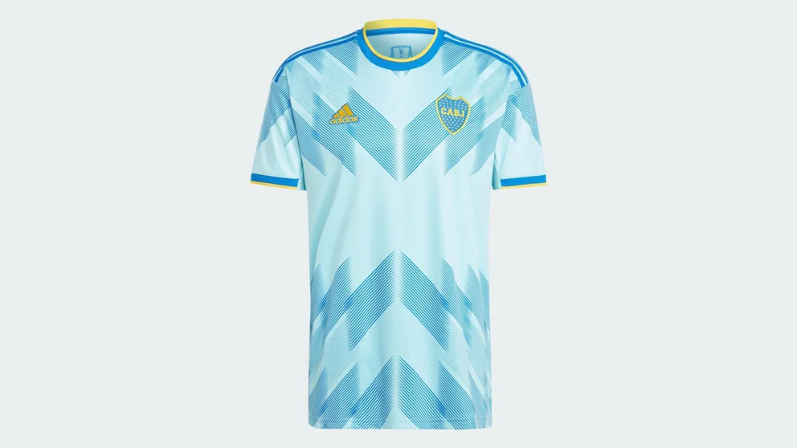

Nuestros Escudos
A lo largo de toda la historia, el Club Atlético Boca Juniors tuvo cuatro diseños de escudos diferentes.
Se crea en 1911 para usar en las hojas con membretes; es probablemente el primer escudo oficial. Se utiliza hasta 1914.
Aparece en los membretes oficiales de 1915 y es el escudo más difundido. Desde 1932 sufre una alteración con el agregado de estrellas. Se utiliza con la sigla "CABJ" y, como excepción, de la siguiente manera: "C. A. Boca Juniors" y "Boca Juniors".

Por una resolución del 18 de octubre de 1932, el escudo deberá llevar estrellas por cada campeonato de Primera División que haya ganado (y que gane en el futuro) Boca Juniors. Desde entonces, surgen un sinfín de objetos boquenses llevando un distintivo con estrellas. En memorias y balances institucionales, recién aparece en 1943. Este emblema se impone en la camiseta en 1977 (sólo en un partido), y de manera continua desde 1993 Así lo expresa el Artículo 4.º del Estatuto: “El escudo será engalanado con estrellas representativas cada una de campeonatos obtenidos por su primer equipo de fútbol y por acontecimientos deportivos que, por su significación, puedan equipararse. Cada estrella que se agregue al escudo deberá ser aprobada por la Asamblea de Representantes.”

Diseñado durante la primera gestión de Mauricio Macri. La franja amarilla es reemplazada por la sigla “CABJ” en el mismo color. Al mes de mayo de 2021, el escudo cuenta con 70 estrellas.